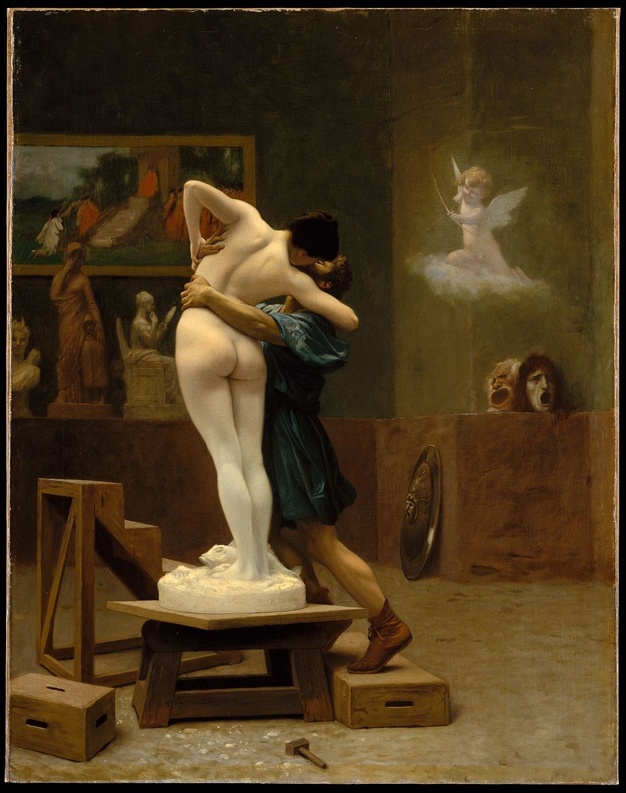

<head>
<meta charset="UTF-8" />
<meta name="keywords" content="drawing, painting" />
<meta name="description" content="drawings by Sunjy" />
<title>Sunjy</title>
<link rel="shortcut icon" type="image/x-icon" href="../../mImages/mCommon/favicon.ico" media="screen" />
<link rel="stylesheet" type="text/css" href="../../mCsses/mCommon/mCssA.css" />
<link rel="stylesheet" type="text/css" href="../../mCsses/mCommon/mCssB.css" />
<link rel="stylesheet" type="text/css" href="../../mCsses/mCommon/mCssC.css" />
<link rel="stylesheet" type="text/css" href="../../mCsses/mCommon/mCssD.css" />
<link rel="stylesheet" type="text/css" href="../../mCsses/mContent/mCssA.css" />
<link rel="stylesheet" type="text/css" href="../../mCsses/mContent/mCssB.css" />
<link rel="stylesheet" type="text/css" href="../../mCsses/mContent/mCssC.css" />
<link rel="stylesheet" type="text/css" href="../../mCsses/mContent/mCssD.css" />
</head>
<script type="text/javascript" src="../../mScripts/mContent/mContentAA.js" /></script>
<script type="text/javascript" src="../../mScripts/mContent/mContentAB.js" /></script>
<script type="text/javascript" src="../../mScripts/mContent/mContentAC.js" /></script>
<script type="text/javascript" src="../../mScripts/mContent/mContentAD.js" /></script>
<script type="text/javascript"></script> 
<script type="text/javascript">
document.write('<div class="mImgAbsolute"></div>');
/*
document.write('<p class="mFontSizeBColor" />From a white paper...</p>');
document.write('<table class="center"><tr><td>');
document.write('');
document.write('</td></tr></table>');
*/
</script>


<script type="text/javascript">
document.write('<p class="mFontSizeBColor" />Pygmalion and Galatea</p>');
document.write('<p class="mFontSizeSColor" />“Pygmalion and Galatea” by Jean-Léon Gérôme depicts the story from Ovid’s Metamorphoses, where the sculptor Pygmalion kisses his ivory statue Galatea, after the goddess, Aphrodite has brought her to life. <br><br>In Ovid’s narrative, Pygmalion was a Cypriot sculptor who carved a woman out of ivory. Galatea  “she who is milk-white” is the name of the statue carved by Pygmalion. His figure was so beautiful and realistic that he fell in love with it.<br><br>On Aphrodite’s festival day, Pygmalion made offerings at the altar of Aphrodite, and he made a wish. When he returned home, he kissed his ivory statue and found that its lips felt warm.<br><br>Aphrodite had granted Pygmalion’s request; the ivory sculpture changed to a woman with Aphrodite’s (or Venus’ the Roman equivalent) blessing.<br><br><br>Greek Mythology Paintings<br><br>Greek mythology is the vast body of stories about the origin and the nature of the world, the lives and activities of deities, heroes, and mythological creatures, and the origins and significance of the ancient Greeks’ own culture and rituals.<br><br>Greek mythology has had an extensive influence on the culture, arts, and literature of Western civilization and is a fundamental part of Western heritage and language.<br><br>Poets and artists from ancient times to the present have derived inspiration from Greek mythology and have discovered contemporary significance and relevance in the themes.<br></p>');
document.write('<table class="center" /><tr><td>');
document.write('<br>In Ovid’s narrative, Pygmalion was a Cypriot sculptor who carved a woman out of ivory. Galatea  “she who is milk-white” is the name of the statue carved by Pygmalion. His figure was so beautiful and realistic that he fell in love with it.<br><br>On Aphrodite’s festival day, Pygmalion made offerings at the altar of Aphrodite, and he made a wish. When he returned home, he kissed his ivory statue and found that its lips felt warm.<br><br>Aphrodite had granted Pygmalion’s request; the ivory sculpture changed to a woman with Aphrodite’s (or Venus’ the Roman equivalent) blessing.<br><br><br>Greek Mythology Paintings<br><br>Greek mythology is the vast body of stories about the origin and the nature of the world, the lives and activities of deities, heroes, and mythological creatures, and the origins and significance of the ancient Greeks’ own culture and rituals.<br><br>Greek mythology has had an extensive influence on the culture, arts, and literature of Western civilization and is a fundamental part of Western heritage and language.<br><br>Poets and artists from ancient times to the present have derived inspiration from Greek mythology and have discovered contemporary significance and relevance in the themes.<br>" />');
document.write('</td></tr></table>');
</script>


